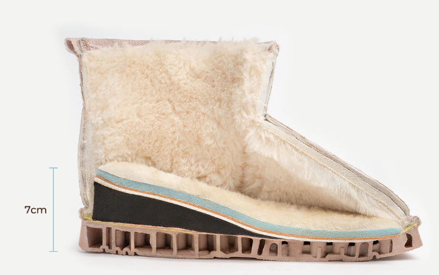
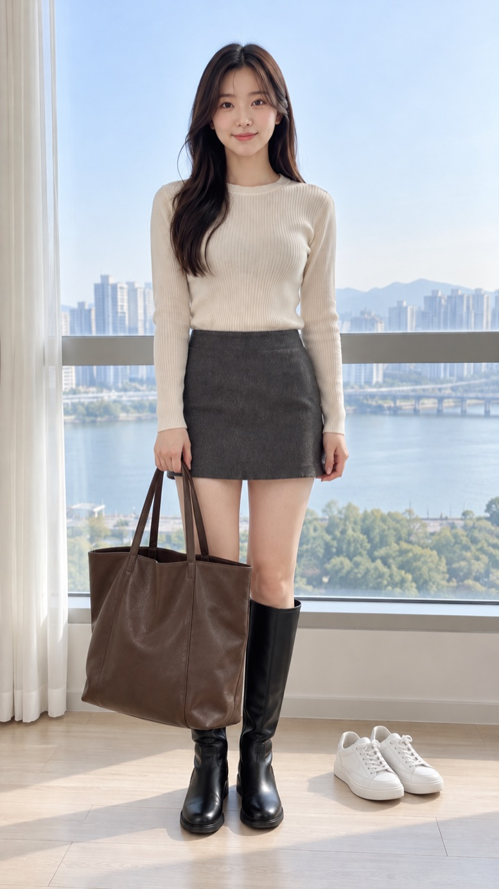

히듕님 키높이 부츠 촬영 가이드
짧은 하의로 허리 아래 핏부터 시작해 주세요. 아래 5장면, 20~35초면 돼요.
제품풀문 카멜로 진행해요
허리 아래 핏
히듕님 영상의 이 구도처럼, 허리 아래부터 부츠 끝까지 하반신과 부츠가 잘 보이면 돼요.
코디짧은 하의 필수예요. 짧은 바지에 흰 양말도 좋아요.
구도발끝이 잘리지 않게 부츠 끝까지 화면에 담고, 2~3초 그대로 머물러 주세요.
협업 크리에이터 예시 · 글자를 넣으신다면 다리와 부츠를 가리지 않게 위쪽에 넣어 주세요.
서서 찍은 전신 두 장면을 나란히
예시는 다른 제품이라 구도만 참고해 주세요. 숫자는 직접 잰 키 또는 “굽 7cm”로 써 주세요.
같은 자리·같은 옷·같은 카메라 높이로 두 번 찍어서 나란히 붙여 주세요.
01 · 2초 이상평소 납작한 신발(없으면 양말)로 서서 머리끝부터 발끝까지.
02 · 2초 이상풀문을 신고 같은 자리·같은 자세로 서서 머리끝부터 발끝까지.
붙이기두 장면을 좌우로 나란히 붙여 키 차이가 확실하게 보이게 해 주세요. 기준선은 없어도 괜찮아요. 대신 두 장면 모두 카메라 위치·높이·거리를 똑같이 맞춰 주세요. 두 발로 똑바로 선 자세로 찍어요.
키를 적으신다면 01·02 각각 신은 채로 직접 잰 값으로만 적어 주세요. 안 재셨으면 “굽 7cm”로만 적어 주세요.
숨은 굽, 퍼 안감을 가까이

숨은 굽 3초풀문을 들고 겉에 보이는 굽과 안에 숨은 굽 높이를 손가락으로 짚어 천천히 보여 주세요.
퍼 안감 2초부츠 입구를 카메라 쪽으로 기울여 안쪽 퍼 안감을 보여 주세요.
디테일 2초스웨이드 질감과 밑창을 가까이 1초씩.
본품은 자르거나 안창을 빼지 마세요.
앞·옆모습, 그리고 걸어오기
앞·옆 2초씩허리 아래만, 부츠가 화면 아래쪽 가운데에 오게. 옆모습은 굽과 발목 라인이 보이게.
걷기 3초카메라 쪽으로 천천히 걸어와요. 걸을 때 부츠가 화면 아래쪽에 계속 보이게.
서서 마무리, 댓글 안내
첫 장면과 같은 구도로 허리 아래부터 부츠 끝까지 3초.
화면에 넣을 글자20% 할인 링크 보내드림
○○ 댓글 키워드와 할인 기간은 업로드 날짜가 정해지면 담당자가 알려드려요.
신발만 보이는 정지 컷 · 2~3초
광고로 썼을 때 반응이 가장 좋았던 구도예요. 영상 중간이나 끝에 2~3초만 넣어 주시고, 이 컷은 자막·음악 없는 원본으로도 따로 보내 주세요. 둘 중 하나면 충분해요.
① 부츠만 옆에서 — 밝은 바닥·벽 앞에서 무릎 아래만, 카메라와 발은 움직이지 않아요.
② 한쪽만 신고 나란히 — 양말 발과 부츠 신은 발을 옆에서 나란히, 그대로 멈춰요.
이것만 빼 주세요

한 발 들기 — 키 비교는 두 발로 서서 찍어 주세요. 한 발을 들거나 흔드는 장면은 빼 주세요.
빠른 전환 — 1초 안에 넘어가는 장면이 이어지면 부츠가 안 보여요. 장면마다 1.5~2초 이상 머물러 주세요.
부츠 가리기 — 가방·손·소품이 부츠 앞을 가리지 않게 해 주세요.
언박싱 장면 넣기 — 상자 열기·포장 뜯기는 빼 주세요. 첫 장면부터 부츠를 신은 모습으로 시작해요.
다른 신발 브랜드 이름·로고·상자, 유명인 이름, 저작권 음원은 넣지 않아요.
촬영 전 준비
준비물 · 촬영 전 연락
- 짧은 하의를 준비해 주세요. 흰 양말을 같이 신으면 더 좋아요.
- 키 비교용 평소 납작한 신발(없으면 양말로 찍어도 돼요). 폰 받침대가 있으면 같은 높이로 찍기 좋아요.
- 수정본 전달 날짜와 업로드 날짜를 알려 주시면 할인코드·이벤트 기간을 맞춰 보내드려요.
연락은 이 가이드를 받은 대화방으로 주세요.